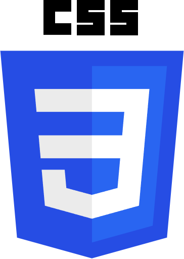
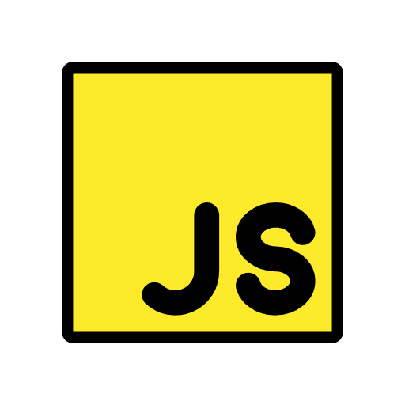
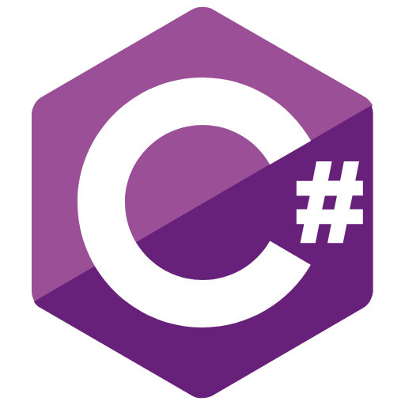
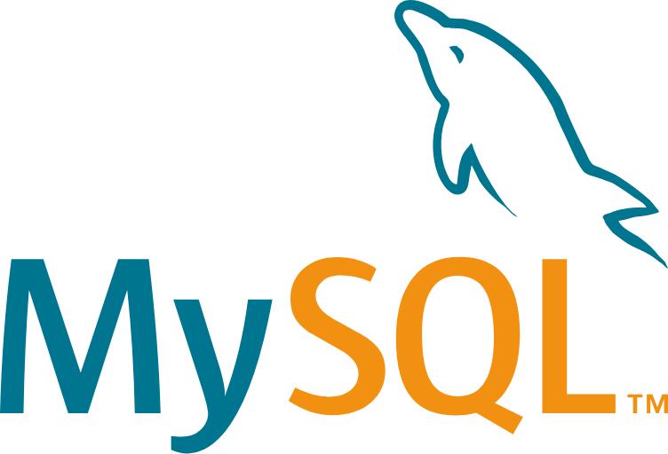

.png)
Muito prazer, sou o Raphael Tettmann
Sou desenvolvedor apaixonado por programação, com experiência básica em JavaScript, C# e Python. Atualmente, estou focado em me tornar um desenvolvedor full-stack e ampliar meu conhecimento em inteligência artificial. Busco aprender desde o desenvolvimento de sites simples até a criação de sistemas completos com front-end, back-end e integração com bancos de dados.
Acredito que a chave para a resolução de problemas é a colaboração, por isso, sempre busco aprender com pessoas mais experientes, seja através de vídeos tutoriais, como os disponíveis no YouTube, ou por meio de ferramentas como o ChatGPT. Organizo minhas tarefas e projetos utilizando plataformas como o Trello e o Figma, o que me ajuda a manter tudo estruturado e eficiente.
Atualmente, estou em um estágio em Análise de Dados, onde adquiri uma visão mais ampla sobre o uso de dados em sistemas. Também tenho experiência com projetos freelancer, como o desenvolvimento de websites, o que me proporcionou uma compreensão sólida de como transformar ideias em soluções funcionais e de qualidade.
Minha jornada na programação está sempre em evolução, e meu objetivo é continuar aprendendo, tanto no desenvolvimento full-stack quanto no campo promissor da inteligência artificial.
Minhas especialidades.

HTML 5
Domino HTML5 para estruturas de páginas web de forma semântica e organizada, crio páginas responsivas, compatíveis com diferentes dispositivos e navegadores, sempre focando na clareza do código e na experiência do usuário.

CSS 3
Utilizo o CSS para deixar o site mais organizado possível. Tenho experiência com Flexbox e grid, também sei de animação, transições e variáveis CSS, sempre em busca de uma melhor experiência do usuário.

JavaScript
Tenho conhecimento básico de JavaScript voltado para o front-end. Já consigo criar interações simples nas páginas, validação de formulário e algumas animações.

Python
Tenho conhecimento em Python voltado para o desenvolvimento de aplicações e automação de tarefas. Possuo experiência com lógica de programação, manipulação de dados, integração com bancos de dados e desenvolvimento de soluções utilizando Python.

C#
Estou aprendendo C# e já entendo os conceitos básicos como variáveis, condicionais, laços e criação de classes. Estou praticando em um projeto pessoal para poder criar projetos mais complexos futuramente.

MySql
Utilizo o MySQL e consigo realizar operações CRUD: criar, consultar, atualizar e excluir dados. No meu projeto pessoal, estou praticando a integração com C# e JavaScript para poder trabalhar em outros projetos.
WordPress
Sei utilizar o WordPress para personalizar sites com temas e plugins, e no momento estou aprendendo a criar e editar meus próprios temas usando HTML, CSS e JavaScript.

PowerBI
Tenho conhecimento básico em Power BI, com foco na criação de dashboards interativos e visualização de dados. Sei importar dados de diferentes fontes e editar todas essas informações no Power Query, e criar relatórios visuais com gráficos, tabelas e filtros dinâmicos.